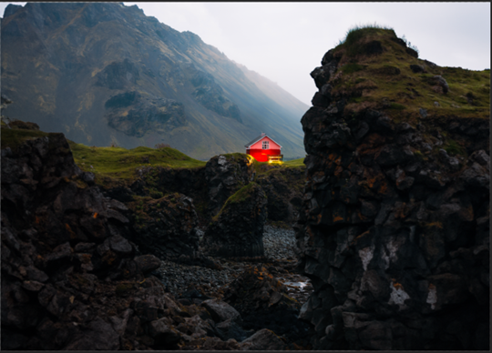
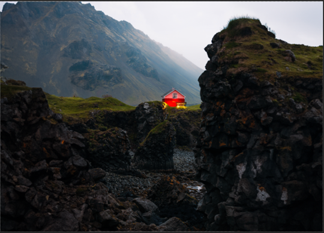
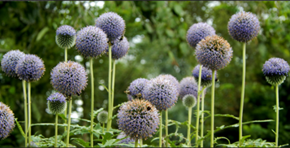
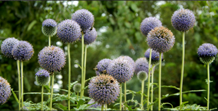
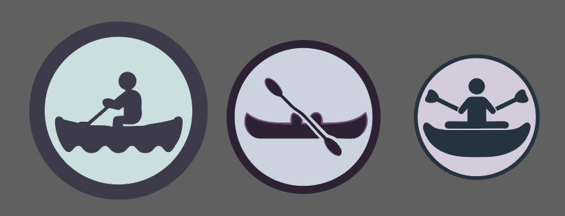
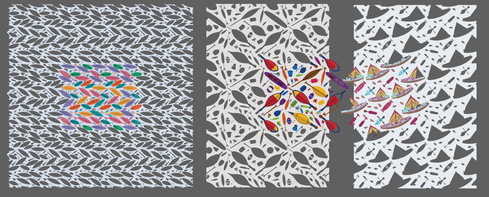
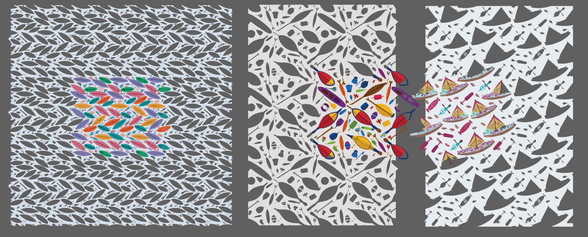
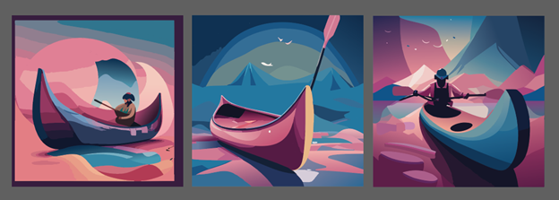

Photoshop Generative Fill Tool
Basic Image Modification
- Select area to be replaced using generative fill with the marquee tool/lasso tool Remove an Object: Select expand/contract selection. Then pick generative fill
- Type in the prompt for replacement (EX: red house with lights)
- Choose from variations or regenerate responses
- Photoshop alters surrounding area to better blend in generated content with the original image
 

Expand with Generative Fill
- Crop tool. Make sure generative fill is selected
- Option key to expand canvas in both directions then double click to generate
 


- Example above shows an expanded flower environment, and improved contrast adjustment using photoshop expand generation features Creating a Variation
- Object selection tool/select area tool then generate with/without prompt
- Example below adds a body of water using the lasso tool for selection and the prompt ''small body of water"

Creating a Variation
- Object selection tool/select area tool then generate with/without prompt
- Example below adds a body of water using the lasso tool for selection and the prompt ''small body of water" (house image with water) (flower expanded image)
- Generative expand was used, then flowers were recolored using generative fill, a bee was added using the lasso tool and generative fill prompt honey bee
Adobe Illustrator
Text to Vector Graphic
- Select the area to generate a vector by using a filled shape to define the size.
- Type text prompt
- Choose from variations on the sidebar.
- Change the type: subject/scene/icon/pattern in the sidebar options
- Example below adds a vector tent and boat to the scene that mimics the background.

Icon/pattern generation
- Create a filled shape area.
- Type prompt and select from variations.
- Not as good as text to vector. Inaccurate generation for a canoe, not enough reference material
- Text to pattern also inaccurate: not creating canoes as a pattern. 
 

Scene to Vector
-
Use filled shape area or prompt
-
Results not accurate for human anatomy some objects
-
Struggles with facial features, elements can blend into each other: oar row attached directly to the boat
-
Follows style, color scheme of existing background material in the file
-
Prompt used: canoe with paddle on water 
-
Vector Post apocalypse city with a sunset using prompt to vector